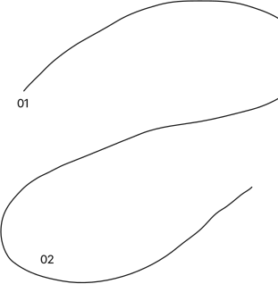
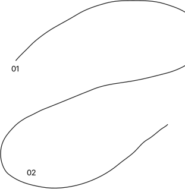
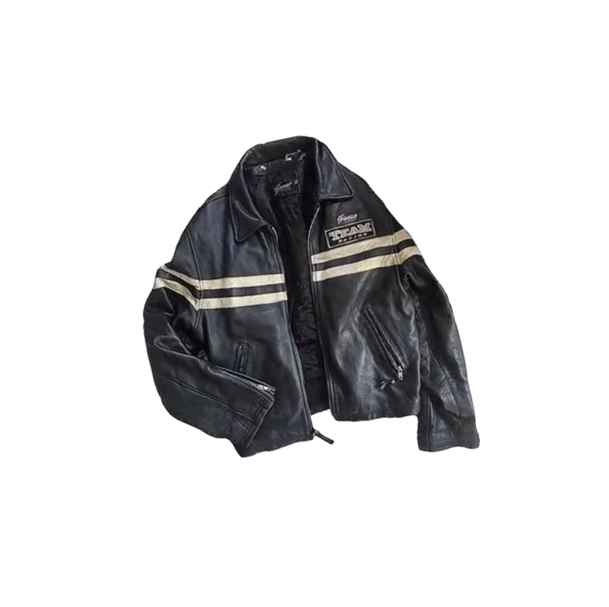
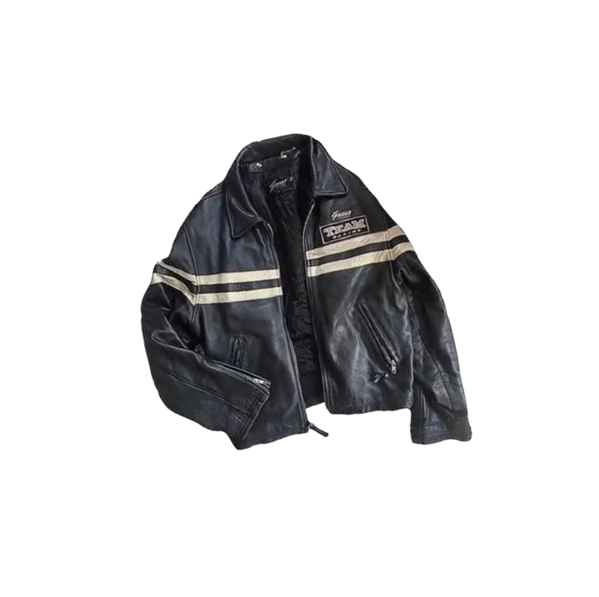

#FFFFFF
(255,255,255)

Медиасервис, который доступен для всех и собирает всю необходимую информацию в одном месте
Снять барьеры общения между поколениями
хранение наследия
поколений
улучшение коммуникации
новые знания
толерантность
повышение
осознанности
доступность для всех
Дружелюбный, понимающий, разносторонний, коммуникабельный, терпеливый, объединяющий
Не официальный, а дружелюбный, чтобы у каждого пользователя было чувство, что, он общается с родным человеком
 

Подобный прием особенно ярко передает главную идею нашего бренда: только объединив знания о разных поколениях мы сможем получить полноценную картину мира
#FFFFFF
#000000

#F4F3EF
#000000
#FFFFFF
#000000
Версия для крупных форматов

Версия для
средних форматов

Версия для
мелких форматов

Логотип состоит из большого количества мелких деталей, поэтому размещается на мелких форматах в упрощенной версии

(32,32,32)
(244,243,239)
(255,255,255)

шрифт для заголовков
Наш медиасервис помогает людям из разных поколений лучше понимать друг друга, знакомя их с культурой других поколений
наборный шрифт

Наш медиасервис помогает людям из разных поколений лучше понимать друг друга, знакомя их с культурой других поколений
Типографика становится достаточно нейтральной, основной акцент на самых крупных заголовках, все они выполняются обводкой

 
 

#FF3D4D
#FFB24F
#305FD0
#D4E6FB
#7A767D
#D4D4D4
Фотографии подвергаются минимальной обработке, в фирменном стиле используются только обтравленные фото


В качестве графики используются линии, соединяющие точки. Графика может как взаимодействовать с фото, так и быть самостоятельной.
Носителями становятся стикеры, плакаты, бейджи, футболки и кепки. В качестве мерча наш бренд предлагает предметы, ассоциирующиеся с разными поколениями